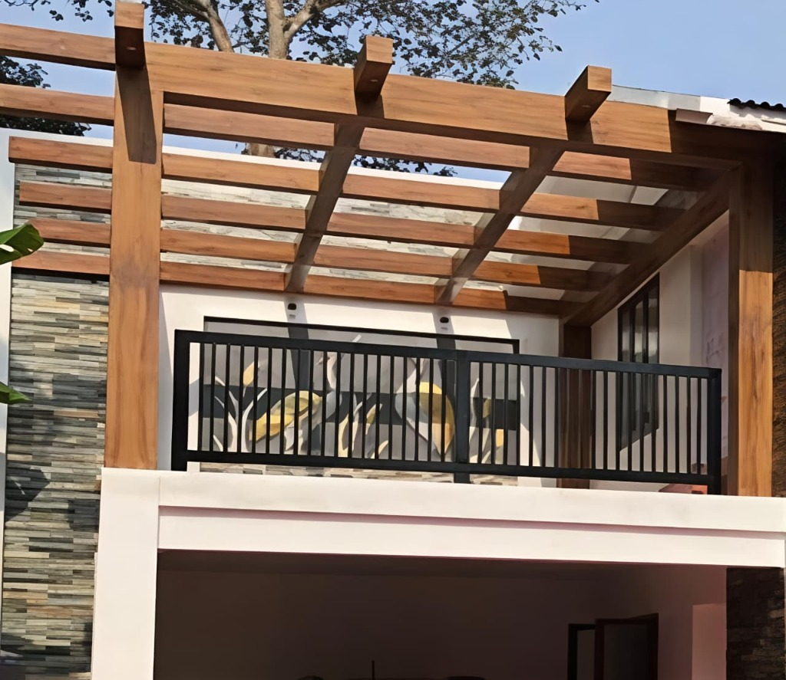
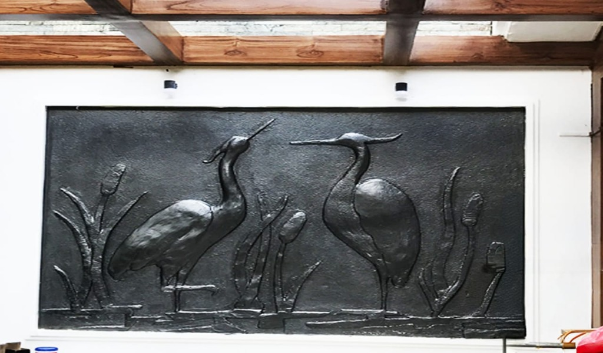
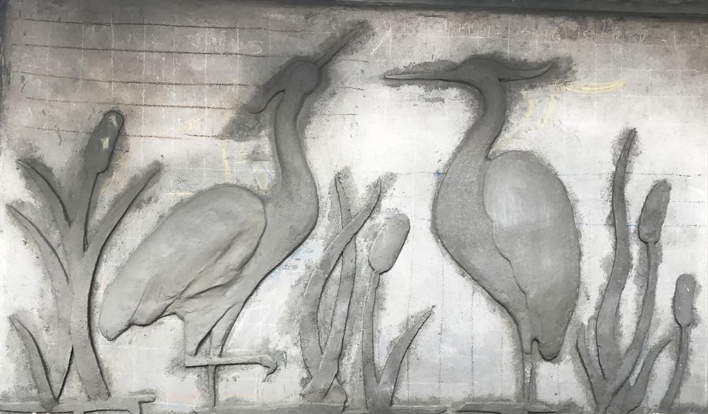
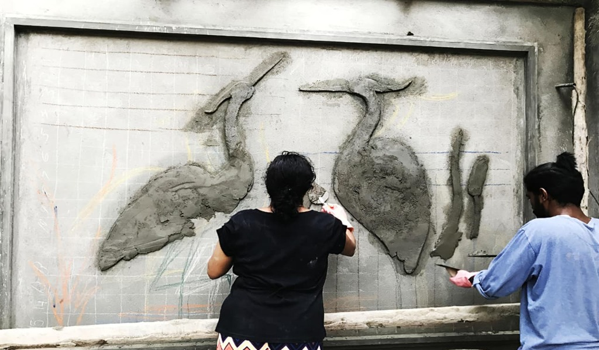

BACK
BACK





Adoor
"THE CRANES" - A beautiful custom mural wall art piece for a residential building in Adoor. This gallery showcases the intricate process from the initial hand-sculpted cement phase to the final stunning gold and silver painted finish.